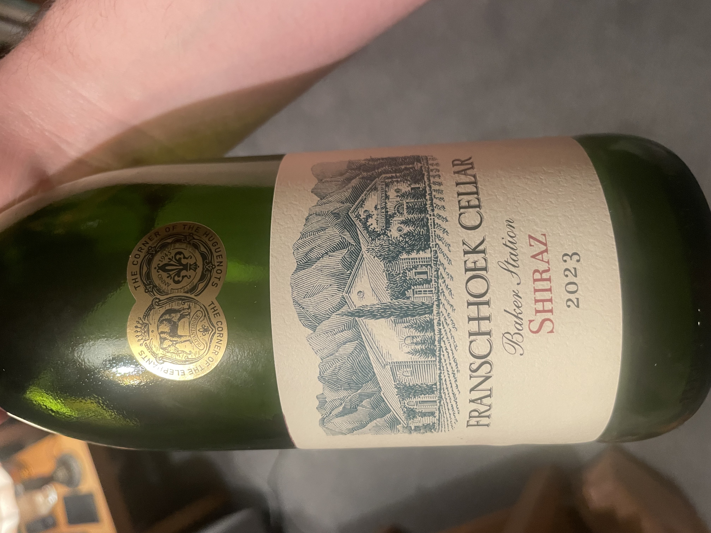
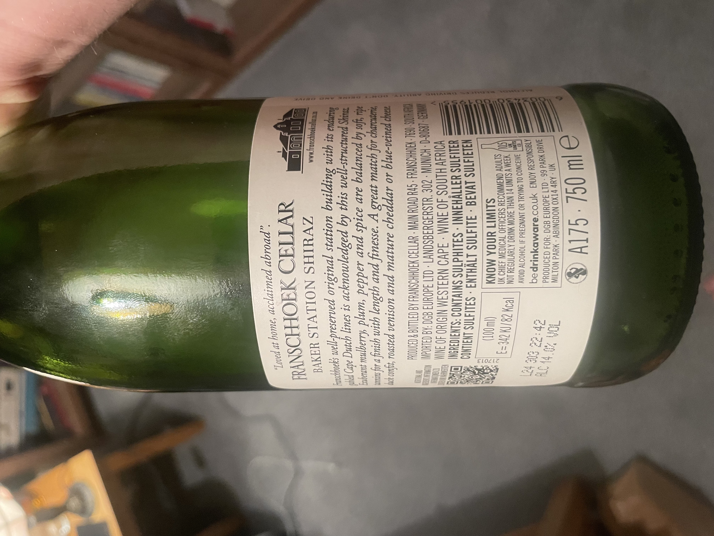

Wine & Whisky
21/10/2025
I am a whisky man, but I'm trying to improve my wine game. I started with the French wine first (focus on the best I say). I tried a Cabernet-Sauvignon (the grape type). I found it a bit tart. I discovered you're meant to leave the wine in the glass at least 15 minutes to oxidise and open the flavour. Next I tried Merlot (another type of grape); I preferred it to Cabernet-Sauvignon. I realised I liked a more full-bodied wine, rather than medium-bodied. The really black stuff. My father recommended Shiraz or Malbec.
Today I tried a Shiraz. I looked for an Australian Shiraz in my local shop, but no luck. So I got a Dutch-South African brand. Screw-top. It's great. My favourite yet. Like father like son I guess.
Next, I try Malbec.
 